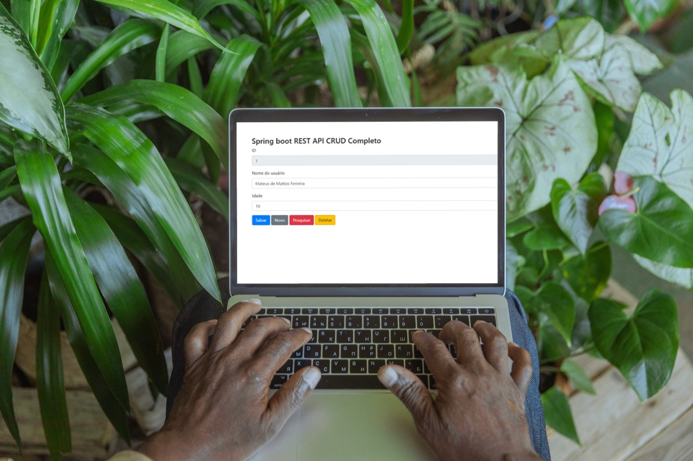
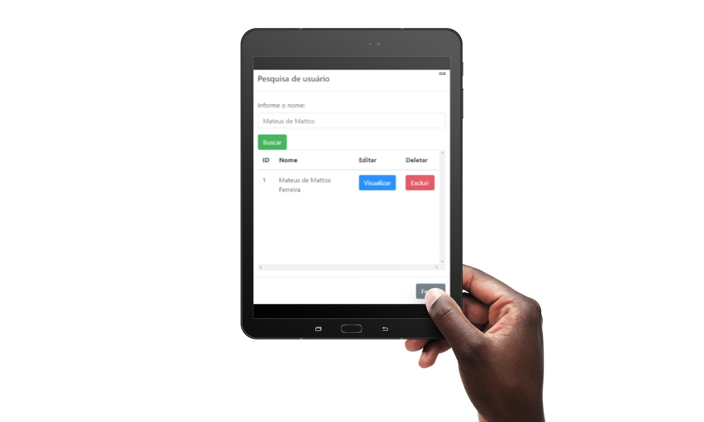

- Home
- >
- Portfólio
- >
- Todos os Projetos
- >
- CRUD Completo
CRUD Completo
Descrição do projeto
Quando quis aprofundar um pouco mais em Spring Boot, encontrei um curso que ensinava a fazer um CRUD na plataforma da JDEV Treinamentos. Até o momento, eu ainda não sabia o que era CRUD, mas me interessei muito nesse tipo de projeto, e gostei muito de produzir esse trabalho, onde tive que ralar um pouquinho, visto que eu ainda estava aprendendo a usar mais profundamente o Javascript. De qualquer forma, foi muito bom para meu desenvolvimento profissional, já que toda a parte que eu menos sabia manejar, ficou bem claro.
De modo mais detalhado, nesse CRUD nós temos duas telas, onde temos a tela principal de cadastro de uma pessoa com nome e idade. O ID da pessoa é setado automaticamente, e na segunda tela podemos pesquisar as pessoas cadastradas pelo nome em que atribuímos no cadastro. Ainda nessa tela de pesquisa, conforme imagem abaixo, podemos setar uma pessoa que pesquisamos e então modificar seu nome ou sua idade na tela principal.
Falando mais especificamente das tecnologias utilizadas, utilizei Spring no backend com o Java 17, onde trabalhei com o Tomcat e o Maven. Além disso, também fiz a conexão com o banco (utilizei o Postgres) pelo properties, onde para meu desenvolvimento utilizei um banco na minha máquina, sendo subtituído pelo banco do Heroku quando publiquei o site.
Se tratando do Bootstrap, graças ao ensino do mentor das aulas, foi de fácil entedimento toda a parte do JQuery e da relação entre os sistemas de back e front que foram utilizados no projeto. O projeto foi totalmente desenvolvido pelo Eclipse, e isso ajudou bastante na navegação para relacionar as duas linguagens.
Clique aqui para acessar o link do meu projeto no Github!
← Todos os Projetos
← Portfólio
← Home